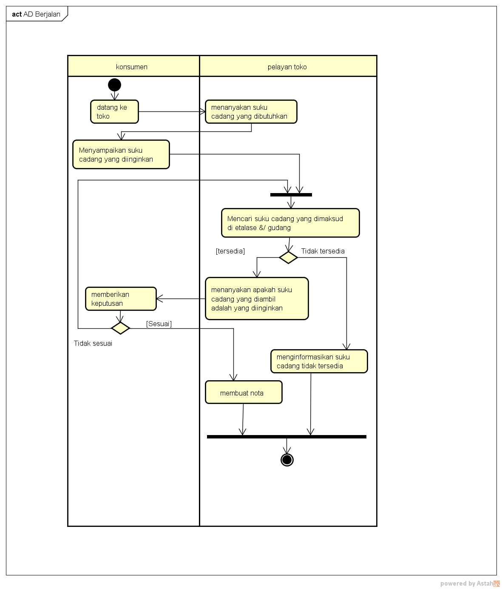

NIM :1811500021
NAMA :Indah Wulandari
KELOMPOK :TI6A
hasil saya menyadur di pertemuan 2 :
- perhitungan nilai kehadiran cukup membuat file index.html di setiap direktori pertemuan di github (angka sesuai dengan pertemuan yang sedang berlangsung)
- mahasiswa harus menyimpulkan apa yang dibahas disetiap pertemuan melalui video dari pengajar
- penghitungan nilai tugas, dari kualitas konten file index.html tiap pertemuan
- pertemuan kedua materi yg di bahas adalah Analisa sistem berjalan : (pengajar memberikan studi kasus, contoh penjualan barang pada sebuah toko)
- di pertemuan kali ini mahasiswa menggambarkan activity diagram sesuai dengan contoh yang diberikan pengajar
- menganalisa masalah yang terdapat pada contoh yang di berikan pengajar
- masalah yang pertama yang terjadi pada studi kasus adalah proses transaksi masih dilakukan secara manual
- masalah kedua pada studi kasus yaitu konsumen harus datang ke toko
- msalah ketiga konsumen yang jaraknya jauh akan kesuliatan memesan suku cadang
- masalah keempat adalah omset penjualan tiap harinya rendah
- masalah kelima bisa terjadi kesalahan pencatatan transaksi pembelian suku cadang yang dilakukan konsumen
- masalah terakhir adlah memakan waktu yang lumayan lama
- yang selanjutnya di bahas adalah analisis sistem berjalan
- mencoba menggambarkan analisi sistem berjalan kedalam diagram UML yaitu activity diagram
- untuk software yang digunakan dalam membuat activity diagram ini adalah aplikasi Astah community
- untuk teori dari materi yang disampaikan mahasiswa dapat mencari referensi dari internet
- activity diagram itu untuk menggambarkan proses sistem berjalan
- mahasiswa mengikuti instruksi dari prngajar untuk membuat activity diagram dengan Nama AD berjalan
- semua proses pembuatan activity diagram di contohkan langsung oleh pengajar dan sesuai dengan analisis sistem berjalan dari studi kasus yang ada
- untuk menyimpan file Astah seperti menyimpan file biasa,untuk menyimpan dalam bentuk png bisa melalui aplikasi paint lalu di save dlm bntuk gambar
hasil file project astah Download
